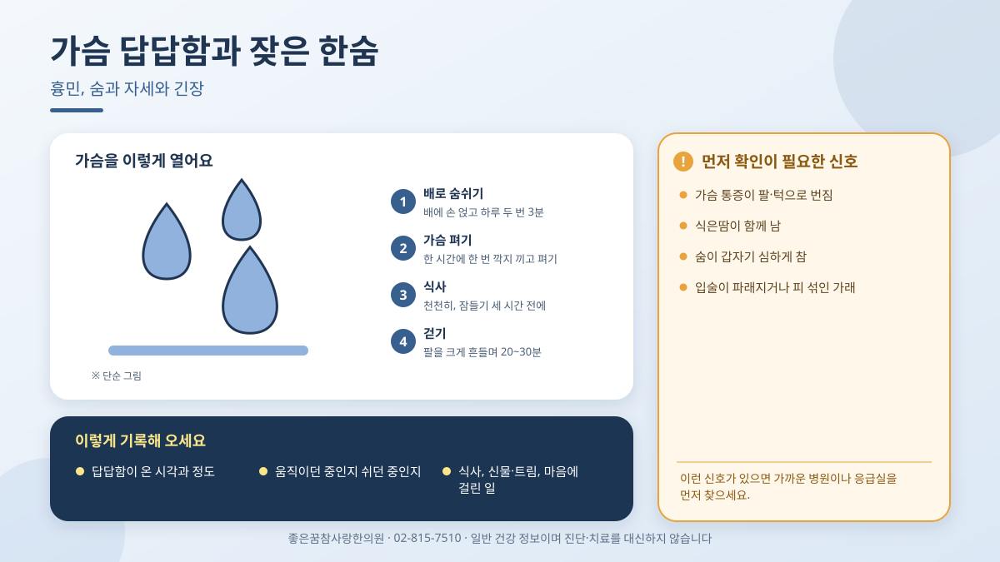

이종호 한의사 감수좋은꿈참사랑한의원 대표원장 (한의사 면허번호 19769)발행 2026-11-26 · 수정 2026-11-26
이 글의 차례
모니터 앞에서 메일을 읽다가 저도 모르게 "하아" 하고 긴 한숨이 나옵니다. 옆자리 동료가 무슨 일 있느냐고 묻는데, 딱히 큰일이 있는 것은 아닙니다. 그저 가슴 한가운데가 무언가로 꽉 눌린 듯 답답하고, 숨을 끝까지 들이쉬어야 겨우 시원해지는 느낌이 하루에도 여러 번 찾아옵니다.
진료실에서 "가슴이 답답해서 한숨을 쉬어야 살 것 같아요"라는 말씀을 자주 듣습니다. 처음에는 심장에 문제가 생긴 건 아닐까 걱정돼 검사를 받아 보고, 이상이 없다는 말에 안심하면서도 답답함은 여전히 남아 있다며 오십니다.
한의학에서는 이렇게 가슴이 막힌 듯 답답한 느낌을 흉민이라고 부릅니다. 흉은 가슴, 민은 답답하다는 뜻입니다. 숨이 안 쉬어지는 것은 아닌데 가슴이 시원하게 열리지 않는 느낌, 그 느낌을 풀려고 한숨이 자꾸 나오는 모습이 흉민의 대표적인 얼굴입니다.
흉민은 어떤 느낌인가요?
흉민을 겪는 분들이 쓰는 표현은 다양합니다. 가슴에 돌을 얹은 것 같다, 체한 것처럼 꽉 막혔다, 숨이 반만 들어가는 것 같다, 가슴을 누가 조이는 것 같다는 말씀을 많이 하십니다. 통증이라기보다는 묵직하고 갑갑한 느낌에 가깝습니다.
한숨은 몸이 그 답답함을 풀려고 하는 자연스러운 반응입니다. 숨을 깊게 들이쉬고 길게 내쉬면 잠깐 시원해지기 때문에, 하루에도 수십 번 한숨을 쉬게 됩니다. 그러다 보니 주변에서 '무슨 걱정 있느냐'는 말을 자주 듣고, 그 말이 또 마음을 무겁게 만들기도 합니다.
답답함은 하루 중 특정한 때에 더 커지는 경우가 많습니다. 아침 출근길, 회의 전, 밥을 먹은 뒤, 잠자리에 누웠을 때처럼요. 어떤 때에 커지는지를 알면 그 배경이 긴장인지, 소화인지, 자세인지를 가늠하는 데 도움이 됩니다.
왜 가슴이 막힌 듯 답답할까요
가장 흔한 배경은 오래 쌓인 긴장입니다. 마음이 쫓기면 어깨가 귀 쪽으로 올라가고, 가슴과 옆구리 근육이 굳으며, 숨이 가슴 위쪽으로만 얕게 쉬어집니다. 횡격막이 충분히 내려가지 못하니 숨을 쉬어도 덜 찬 느낌이 들고, 몸은 그것을 메우려고 한숨을 쉬게 됩니다.
말하지 못한 감정도 가슴에 자리를 잡습니다. 서운함, 억울함, 걱정을 꾹 눌러 담는 일이 잦으면 가슴 한가운데가 묵직해지는 느낌을 많이 받습니다. 한의학에서는 이를 기운이 가슴에 맺혀 잘 돌지 못하는 흐름으로 보고, 간의 기운이 막혔다고 표현하기도 합니다.
소화도 가슴 답답함과 가깝습니다. 위산이 올라오는 역류, 체기, 가스가 찬 더부룩함은 가슴 아래쪽이 꽉 막힌 느낌을 만듭니다. 밥을 급하게 먹거나 늦은 저녁을 먹고 바로 누운 날 답답함이 심해진다면 소화 쪽을 함께 살펴야 합니다.
자세도 영향을 줍니다. 오래 앉아 등이 굽고 어깨가 앞으로 말리면 가슴이 좁아져 숨이 덜 들어갑니다. 하루 종일 모니터나 휴대폰을 내려다보는 분이라면, 자세만 바로잡아도 가슴이 조금 열리는 느낌을 받으실 수 있습니다. 반대로 숨이 얕아지면 어깨가 더 굳는 고리가 생기기도 합니다.
심장, 폐, 위의 문제와는 어떻게 나눠 보나요
가슴 답답함은 심장이나 폐의 문제에서도 나타날 수 있어 먼저 이 부분을 구분하는 것이 중요합니다. 계단을 오르거나 빨리 걸을 때 답답함이 오고 쉬면 가라앉는다면, 심장 쪽 확인이 먼저 필요합니다. 가슴 통증이 팔이나 턱으로 번진다면 더욱 그렇습니다.
기침, 가래, 쌕쌕거리는 숨소리가 함께 있거나 찬 공기를 마시면 답답함이 심해진다면 폐와 기관지 쪽을 살펴야 합니다. 신물이 올라오고 누우면 심해지며 명치가 쓰리다면 역류성 식도염 같은 위장 쪽 원인을 먼저 생각합니다.
반대로 움직임과 상관없이 가만히 있을 때 더 답답하고, 한숨을 쉬면 잠깐 시원해지며, 마음이 쫓길 때 커지는 답답함이라면 긴장과 호흡의 흐름이 중심일 가능성이 큽니다. 다만 이 구분은 검사로 다른 원인을 확인한 뒤에 하는 것이 안전합니다.
화병, 공황과는 어떻게 다른가요
화병은 억울함과 분노를 오래 참으면서 가슴이 치밀어 오르고 얼굴로 열이 확 오르는 모습이 중심입니다. 흉민은 그보다 묵직하게 눌리는 답답함이 앞에 서는 경우가 많습니다. 둘이 함께 있는 분도 많아서, 열이 오르는 느낌이 있는지 따로 여쭙니다.
공황 발작은 갑자기 숨이 막히고 심장이 빨리 뛰며 죽을 것 같은 두려움이 몇 분 안에 몰려왔다가 가라앉습니다. 흉민은 대개 그렇게 갑작스럽기보다 하루 내내 은근히 이어지거나, 특정한 때에 서서히 차오르는 모습입니다.
계절과 생활에 따라 달라지는 답답함
환절기와 겨울에는 흉민을 호소하시는 분이 늘어납니다. 추위에 몸이 움츠러들면 어깨와 가슴이 더 굳고, 실내에 오래 머물며 움직임이 줄기 때문입니다. 난방으로 공기가 건조해지면 목과 가슴이 더 갑갑하게 느껴지기도 합니다.
연말처럼 일과 모임이 몰리는 시기, 이사나 이직처럼 생활이 크게 바뀌는 시기에도 답답함이 커지기 쉽습니다. 이런 때에는 답답함 자체보다 그 배경이 되는 잠과 식사 리듬이 먼저 무너지지 않았는지 살펴보세요.
내 답답함을 스스로 점검해 보기
아래 항목 가운데 나에게 해당하는 것을 세어 보세요. 진단이 아니라 진료실에서 이야기를 시작할 실마리입니다.
- 하루에도 여러 번 한숨을 쉰다는 말을 듣는다
- 숨을 끝까지 들이쉬어야 시원해지는 느낌이 있다
- 가만히 있을 때 오히려 답답함이 더 느껴진다
- 마음에 걸리는 일이 있을 때 가슴이 묵직하다
- 밥을 먹은 뒤나 누웠을 때 답답함이 커진다
- 어깨와 목, 등 위쪽이 늘 굳어 있다
해당하는 항목이 많다면 긴장과 호흡, 소화를 함께 살펴볼 때입니다. 움직일 때 답답함이 오거나 통증이 동반된다면 먼저 내과나 심장내과에서 확인해 보세요.
먼저 이렇게 여쭙니다
처음 오시면 저는 대략 이런 순서로 여쭙니다. 미리 생각해 오시면 이야기가 수월해집니다.
- 답답함은 가슴 어디에 오나요? 손으로 짚어 보시면 어디인가요?
- 움직일 때와 가만히 있을 때 가운데 언제 더 심한가요?
- 한 번 오면 얼마나 가나요? 한숨을 쉬면 풀리나요?
- 밥을 먹은 뒤나 누웠을 때 달라지나요? 신물이 올라오나요?
- 최근 마음에 걸리는 일이나 바뀐 생활이 있나요?
- 심장이나 폐 검사를 받으신 적이 있나요?
마음에 걸리는 일은 답하기 편한 만큼만 말씀해 주시면 됩니다. 구체적인 사정을 다 이야기하지 않으셔도, 그 무렵 답답함이 커졌다는 연결만 알아도 살필 방향을 정하는 데 충분합니다.
일상에서 먼저 해 볼 수 있는 것
흉민은 숨과 자세, 긴장을 조금씩 바꿔 가면 가벼워지는 경우가 많습니다. 하루에 몇 번, 짧게라도 가슴을 열어 주는 시간을 만들어 보세요.
- 배에 손을 얹고 배가 부풀도록 숨 들이쉬기, 입을 오므려 길게 내쉬기
- 한 시간에 한 번 일어나 양팔을 뒤로 깍지 끼고 가슴 펴기
- 밥은 20분 이상 천천히, 저녁은 잠들기 세 시간 전에 마치기
- 하루 20~30분 팔을 크게 흔들며 걷기
- 마음에 걸리는 일을 종이에 적어 보기
- 커피와 술은 줄이고 따뜻한 물 자주 마시기
배로 숨쉬기는 처음에는 어색하게 느껴질 수 있습니다. 누워서 무릎을 세우고 배 위에 책을 한 권 올린 뒤, 숨을 들이쉴 때 책이 올라가고 내쉴 때 내려가도록 연습해 보세요. 하루 두 번, 3분이면 충분합니다.
한숨을 억지로 참을 필요는 없습니다. 다만 한숨이 날 때 짧게 끊지 말고, 길게 내쉬는 쪽으로 이어 가 보세요. 내쉬는 숨이 길어질수록 몸의 긴장이 조금 더 풀립니다.
말하지 못한 마음이 쌓여 있다면 믿을 만한 사람에게 털어놓거나, 일기장에 적는 것만으로도 가슴이 조금 가벼워질 수 있습니다. 혼자 감당하기 어려운 일이라면 상담을 받아 보시는 것도 좋습니다.
답답함이 찾아올 때 자리를 잠깐 옮기는 것도 방법입니다. 창문을 열어 바깥 공기를 마시거나, 건물 밖으로 나가 몇 분 걷고 들어오면 몸이 느끼는 공간이 넓어지면서 가슴도 함께 풀리는 느낌을 받는 분이 많습니다.
따뜻함도 도움이 됩니다. 가슴 한가운데와 등 위쪽 날개뼈 사이에 따뜻한 수건을 몇 분 대어 두면 굳은 근육이 풀리면서 숨이 조금 깊어집니다. 뜨겁지 않은 온도로, 피부가 붉어지지 않을 만큼만 하시면 됩니다.
저녁에는 하루 동안 쌓인 긴장을 내려놓는 시간을 따로 만들어 보세요. 잠들기 전 10분 정도 조명을 낮추고 화면을 멀리 둔 채 천천히 숨을 고르면, 답답함을 안은 채 잠자리에 드는 날이 조금씩 줄어듭니다.
자세로 가슴을 여는 작은 습관
하루 대부분을 앉아서 보내는 분이라면 모니터 높이부터 살펴보세요. 화면 윗부분이 눈높이에 오도록 맞추면 고개와 등이 덜 숙여집니다. 휴대폰은 눈높이까지 들어 올려 보는 습관을 들이면 좋습니다.
문틀에 양손을 짚고 몸을 앞으로 천천히 기울이는 스트레칭은 굳은 가슴 근육을 풀어 줍니다. 20초씩 세 번, 숨을 참지 말고 길게 내쉬면서 해 보세요. 어깨가 아프다면 무리하지 않는 범위에서만 합니다.
잠자리에서는 너무 높은 베개가 가슴과 목을 웅크리게 만들 수 있습니다. 옆으로 주무신다면 어깨 높이에 맞는 베개를, 바로 누우신다면 목 아래를 받쳐 주는 낮은 베개를 권합니다.
한의원에서 함께 살필 수 있는 경우
- 검사에서 특별한 이상은 없는데 가슴 답답함과 한숨이 이어지는 경우
- 마음이 쫓기거나 서운한 일이 있으면 가슴이 묵직해지는 경우
- 명치가 막힌 듯하고 트림이나 더부룩함이 함께 있는 경우
- 어깨와 등 위쪽이 굳어 숨이 얕게 쉬어지는 경우
- 답답함 때문에 잠들기 어렵거나 자주 깨는 경우
좋은꿈참사랑한의원에 오시면 먼저 아래 '먼저 확인이 필요한' 신호가 없는지부터 봅니다. 그다음 맥을 짚고 명치와 옆구리의 긴장, 등과 어깨의 굳은 정도, 숨 쉬는 모양을 직접 확인합니다.
진찰한 내용을 바탕으로 생활에서 바꿔 볼 것 하나와 함께 침, 온열 관리, 한약 상담 가운데 지금 상태에 맞는 것을 정합니다. 한약을 상의할 때는 드시는 약을 모두 확인하고 신중하게 정합니다. 다른 병원에서 처방받은 약은 처방한 선생님과 상의 없이 멈추지 않습니다.
이렇게 기록해 오시면 상담이 쉬워집니다
2주 정도 아래 내용을 간단히 적어 보세요. 빠진 날이 있어도 괜찮습니다.
- 답답함이 온 시각과 정도(0~10점)
- 그때 하던 일, 움직이던 중인지 쉬던 중인지
- 식사 시각과 드신 음식, 신물이나 트림
- 마음에 걸렸던 일
- 잠든 시각과 깬 시각
기록을 나란히 놓으면 답답함이 긴장한 날에 몰려 있는지, 밥을 먹은 뒤에 몰려 있는지가 보입니다. 그 차이가 어디부터 손댈지 정하는 실마리가 됩니다.
가족이 곁에서 도울 수 있는 것
한숨을 자주 쉬는 가족에게 "또 한숨이야" 하고 말하면 본인은 더 위축되기 쉽습니다. 대신 "요즘 가슴이 답답해?" 하고 물어봐 주시거나, 저녁에 함께 걷자고 제안해 주세요.
이야기를 들어 줄 때는 해결책을 바로 내놓기보다 끝까지 들어 주는 것이 먼저입니다. 말로 꺼내는 것만으로도 가슴에 맺힌 것이 조금 풀리는 경우가 많습니다.
가슴이 조금 열리는 날을 위해
흉민은 몸과 마음이 함께 보내는 신호입니다. 숨을 길게 내쉬고, 가슴을 펴고, 마음에 쌓인 것을 조금씩 내려놓다 보면 한숨이 나오는 횟수가 줄어드는 것을 느끼실 수 있습니다.
변화는 대개 조용히 옵니다. 한숨을 쉬는 횟수가 조금 줄거나, 답답함이 와도 금방 가라앉는 날이 늘어나는 식입니다. 그런 날도 기록에 함께 적어 두세요.
이번 주에는 하루 두 번, 배에 손을 얹고 3분 숨쉬기부터 해 보세요. 다음에 오시면 답답함 기록부터 함께 펼쳐 보겠습니다.
이런 증상은 먼저 확인이 필요합니다
- 가슴을 쥐어짜는 통증이 팔이나 턱으로 번지고 식은땀이 나는 경우
- 숨이 갑자기 심하게 차고 입술이 파래지거나 피 섞인 가래가 나오는 경우
이런 신호가 있으면 한의원보다 가까운 병원이나 응급실을 먼저 찾으세요.
함께 읽으면 좋은 글
- 가슴이 두근거리고 불안할 때는 어떤 점을 먼저 확인하나요?
- 명치가 아프거나 꽉 막힌 듯 답답할 때는 무엇을 나눠 살피나요?
- 일요일 저녁만 되면 출근 걱정에 가슴이 답답하고 잠이 안 올 때는 어떻게 하나요?
- 갑자기 숨이 막히고 가슴이 뛰는 공황 같은 발작이 올 때는 어떻게 하나요?
- 숨을 크게 쉬거나 몸을 돌릴 때 갈비뼈가 찌릿한 늑간신경통·늑연골염은 어떻게 살피나요?

여쭙는 것
- 답답함은 가슴 어디에 오나요? 손으로 짚어 보시면 어디인가요?
- 움직일 때와 가만히 있을 때 가운데 언제 더 심한가요?
- 한 번 오면 얼마나 가나요? 한숨을 쉬면 풀리나요?
생활에서 해 볼 것
- 배에 손을 얹고 배가 부풀도록 숨 들이쉬기, 입을 오므려 길게 내쉬기
- 한 시간에 한 번 일어나 양팔을 뒤로 깍지 끼고 가슴 펴기
- 밥은 20분 이상 천천히, 저녁은 잠들기 세 시간 전에 마치기
한의원에서 함께 살필 것
- 검사에서 특별한 이상은 없는데 가슴 답답함과 한숨이 이어지는 경우
- 마음이 쫓기거나 서운한 일이 있으면 가슴이 묵직해지는 경우
- 명치가 막힌 듯하고 트림이나 더부룩함이 함께 있는 경우
먼저 확인이 필요한 신호
- 가슴을 쥐어짜는 통증이 팔이나 턱으로 번지고 식은땀이 나는 경우
- 숨이 갑자기 심하게 차고 입술이 파래지거나 피 섞인 가래가 나오는 경우
한눈에 보는 표
| 구분 | 핵심 |
|---|---|
| 여쭙는 것 | 답답함은 가슴 어디에 오나요? 손으로 짚어 보시면 어디인가요? 움직일 때와 가만히 있을 때 가운데 언제 더 심한가요? |
| 생활에서 해 볼 것 | 배에 손을 얹고 배가 부풀도록 숨 들이쉬기, 입을 오므려 길게 내쉬기 한 시간에 한 번 일어나 양팔을 뒤로 깍지 끼고 가슴 펴기 |
| 한의원에서 함께 살필 것 | 검사에서 특별한 이상은 없는데 가슴 답답함과 한숨이 이어지는 경우 마음이 쫓기거나 서운한 일이 있으면 가슴이 묵직해지는 경우 |
| 먼저 확인이 필요한 신호 | 가슴을 쥐어짜는 통증이 팔이나 턱으로 번지고 식은땀이 나는 경우 숨이 갑자기 심하게 차고 입술이 파래지거나 피 섞인 가래가 나오는 경우 |
자주 묻는 질문
한숨을 자주 쉬는 것이 몸에 나쁜가요?
한숨은 답답함을 풀려는 자연스러운 반응이라 억지로 참을 필요는 없습니다. 다만 한숨이 잦다면 몸이 얕은 숨과 긴장 속에 있다는 신호일 수 있어 호흡과 자세를 함께 살펴보시길 권합니다.
심장 검사에서 이상이 없는데도 답답하면 어떻게 하나요?
긴장, 얕은 호흡, 소화, 자세가 함께 얽혀 있는 경우가 많습니다. 기록을 바탕으로 어느 쪽이 중심인지 함께 살피고, 생활에서 바꿔 볼 것부터 정합니다.
가슴이 답답할 때 바로 해 볼 수 있는 것이 있나요?
의자에 등을 기대 앉아 어깨를 내리고, 입을 오므려 숨을 길게 내쉬기를 다섯 번 해 보세요. 움직일 때 답답함이 심해지거나 통증이 함께 온다면 먼저 병원에서 확인하셔야 합니다.
흉민에 한약을 먹어도 되나요?
진찰한 뒤 긴장, 소화, 잠의 흐름을 보고 함께 정합니다. 드시는 약을 모두 확인하고 신중하게 정하며, 생활에서 호흡과 자세를 챙기는 것을 함께 권합니다.
좋은꿈참사랑한의원은 재진 때 지난번 이야기부터 이어서 여쭙니다. 진료시간과 예약은 오시는 길에서 확인하세요.
어디서 상담받을 수 있나요?
좋은꿈참사랑한의원은 서울 동작구 만양로2길 2 신성빌딩 3층·5층(서울 동작구 상도동, 7호선 상도역 3번 출구 근처)에 있습니다. 한의사 3명(이종호 대표원장, 조영기 수석진료원장, 정원영 진료원장)이 진료합니다. 진료시간은 평일 09:30~20:00(점심 13:00~14:00), 토·일·공휴일 09:30~15:00이며, 방문 전 전화로 확인을 권합니다. 예약은 네이버 예약, 카카오톡 상담, 전화 02-815-7510로 받습니다.
이 글은 일반적인 건강 정보이며 개인의 진단이나 치료를 대신하지 않습니다. 증상이 있거나 복용 중인 약이 있다면 진료를 통해 확인하세요. 치료 효과는 개인마다 다를 수 있습니다.
작성 기준: 일반적으로 알려져 있는 건강 정보를 참고해 정리했습니다(대표원장 감수). 증상 기록은 1~2주 동안 하루 1회, 비슷한 시간에 적어 오시면 지난 상태와 비교하기 쉽습니다.